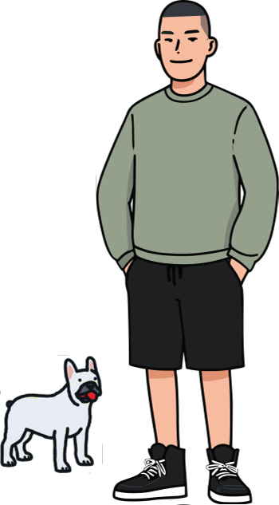

{% include head-meta.html %}
{% include header.html %}

艺术教学笔记
不废话艺术
Podcast
{% comment %} 教学笔记篇数多（全文都铺在卡片上），首屏只显示前 initial 篇，其余加 is-hidden， 由"加载更多"逐批揭示。隐藏卡片 display:none 不占高度，瀑布流分列不受影响。 注意：卡片被 masonry 重排进各列后 DOM 顺序不再等于阅读顺序，揭示必须按 data-idx 排序（见 card.js），否则一次会揭示同一列的卡片，只有一列在变长。 收录不依赖这里，每篇的独立页各自进 sitemap。 initial=首屏显示几篇，batch=之后每点一次"加载更多"追加几篇 {% endcomment %} {% assign initial = 10 %} {% assign batch = 10 %} {% assign notes_items = site.channel | where: "category", "notes" | sort: "order" %} {% comment %} 有"加载更多"按钮时，底边线交给按钮那一格画，避免两条线叠在一起 {% endcomment %}
{% for item in notes_items %} {% if forloop.index0 < initial %} {% include channel-card.html item=item show_body='true' idx=forloop.index0 %} {% else %} {% include channel-card.html item=item show_body='true' hidden='true' idx=forloop.index0 %} {% endif %} {% endfor %}
{% if notes_items.size > initial %}
加载更多（还有
{{ notes_items.size | minus: initial }}
篇）
{% endif %}
{% assign art_items = site.channel | where: "category", "art" | sort: "order" %} {% for item in art_items %} {% include channel-card.html item=item %} {% endfor %}
{% assign podcast_items = site.channel | where: "category", "podcast" | sort: "order" %} {% for item in podcast_items %} {% include channel-card.html item=item %} {% endfor %}
{% include footer.html %}